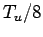

Next: Tweaking Parameters Inside of Up: Autopilot Tuning Previous: Trial and Error Tuning
The Ziegler-Nichols methods of controller tuning are the "closed loop" and the "open loop" method. The closed loop method is quite similar to the trial and error method:
Steps 1-3 are the same as in the trial and error method.
Step 4. Take note of the ultimate gain , and the ultimate period . The ultimate period is the period of the oscillations.
Step 5. Calculate controller settings according to this table:
| Controller | |||
| P | inf. | 0 | |
| PI |
|
0 | |
| PID |
|
 |
For more info on tuning and PID control systems follow this link:
http://www.jashaw.com/pid